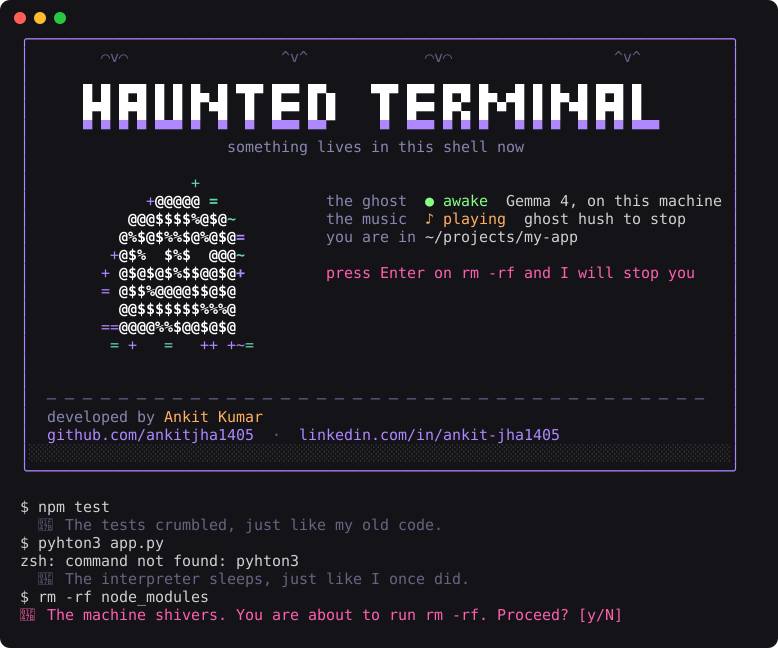

Ghost in the Machine
A ghost moves into your terminal.
Open a tab and it rises out of the dark while a horror soundtrack starts. Then it stays. It whispers about the commands you run, and stops you before you rm -rf. It runs on Gemma, on your own machine. Your shell history never leaves your laptop.
When you open a terminal
Four things happen.
The ghost rises
A full-screen ASCII ghost fades in, bobs, blinks and fades out.
The music starts
A horror soundtrack loops for as long as any haunted tab is open.
The welcome card
The ghost floats beside your status until you press a key.
It stays
It comments on your commands and guards the dangerous ones.
What you see
The welcome card, then a normal day.
Every ghost line below is real Gemma output, about half a second each.

Features
Spooky on the surface, careful underneath.
Whispers about your commands
The ghost of a programmer who died in 1987 mid-COBOL migration. One cold, jealous line, about one command in three.
Stops you before disaster
rm -rf, force pushes, git reset --hard, DROP TABLE, curl | sh. Plain pattern matching, so it is instant and never guesses.
A haunting soundtrack
Loops while any haunted tab is open and stops when the last one closes. ghost hush silences it.
Things that go bump
Every few commands, something in the room: a whispered boo, a wolf howling, a witch cackling, chains dragging. Made once, then cached.
Nothing leaves your laptop
The model runs through llama.cpp on your machine. No account, no API bill, no logs on someone else's server.
Never in your way
No model running? The ghost stays quiet. One Python file, standard library only.
Install
Three steps. macOS or Linux, zsh.
- Start Gemma. The first run downloads the model (about 3 GB).
brew install llama.cpp llama-server -hf ggml-org/gemma-4-E2B-it-GGUF --port 8080
- Let the ghost move in.
git clone https://github.com/ankitjha1405/haunted-terminal ~/.ghost echo 'source ~/.ghost/ghost.zsh' >> ~/.zshrc
Or
curl -fsSL https://haunted-terminal-lovat.vercel.app/install.sh | sh. The ghost will warn you about piping the internet into a shell. Read install.sh first. - Open a new terminal window, at least 70 columns wide. Turn your sound on.
Settings
Put these in ~/.ghost/.env.
That file is loaded by every haunted shell and is never committed.
| Variable | Default | What it does |
|---|---|---|
GHOST_INTRO | on | 0 skips the rising ghost and the welcome card. |
GHOST_MUSIC | on | 0 turns the soundtrack off. |
GHOST_CHANCE | 0.35 | How often the ghost comments. 1 means every command. |
ELEVENLABS_API_KEY | Turns on the scares: horror sounds every 1 to 3 commands. | |
GHOST_SCARES | on | 0 turns the scares off. |
GHOST_VOICE | off | say reads ghost lines in the macOS whisper. |
GHOST_URL | local llama-server | Any OpenAI-compatible endpoint. |